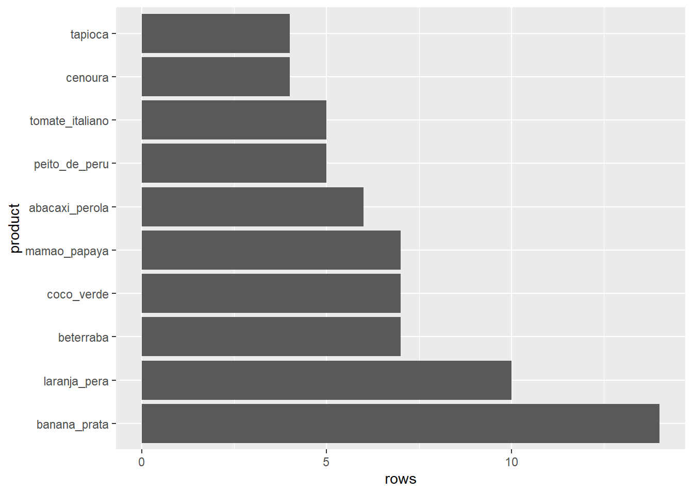
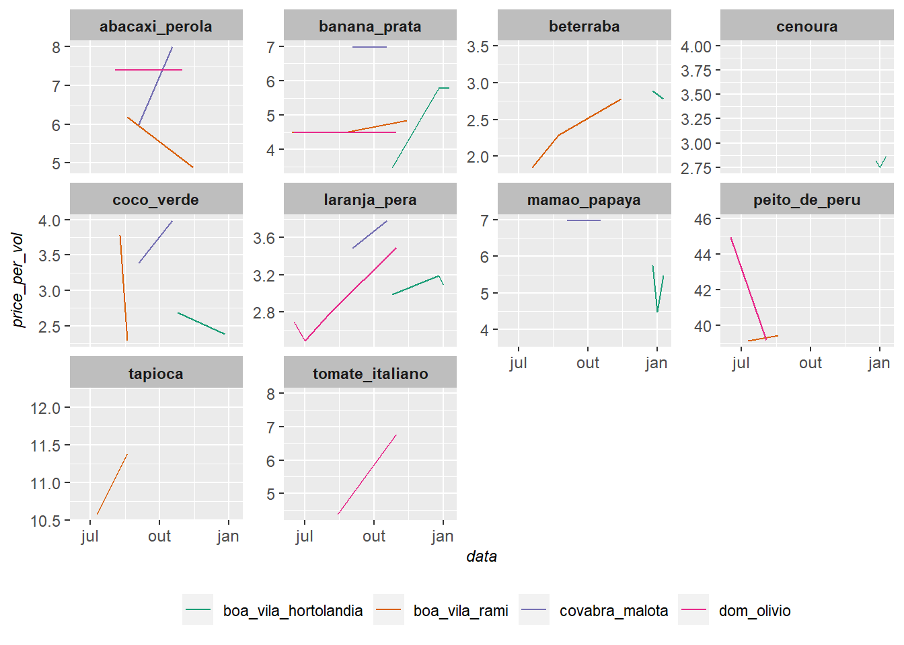

library(GGally)
library(fpp3)
library(fable)
library(tsibble)
library(tsibbledata)
library(feasts)
library(tidyverse)
library(patchwork)
library(seasonal)
library(fma)
# Função para padronizar o design dos gráficos
theme_graph <- function(){
theme(
plot.title = element_text(size = 16),
plot.subtitle = element_text(size = 12),
plot.caption = element_text(face = "italic", size = 9),
axis.text = element_text(size = 9),
axis.title = element_text(face = "italic", size = 9),
strip.background = element_rect(fill = "grey"),
strip.text = element_text(face = "bold"),
legend.position = "bottom",
legend.title = element_blank()
)
}
dataset <- readr::read_csv(file = "https://raw.githubusercontent.com/FranciscoPiccolo/franciscopiccolo.github.io/master/datasets/2020-06-20-grocery_price_volatility/dataset_1.csv")
dataset %>%
group_by(product) %>%
summarise(rows = n()) %>%
filter(rows <= 3) %>%
select(product) -> low_sample_product
dataset <-
dataset %>%
mutate(price_per_vol = price/volume_gm_ml) %>%
filter(!product %in% c(low_sample_product$product))
****
dataset$price <- as.numeric(dataset$price)
dataset %>%
group_by(product) %>%
summarise(rows = n()) %>%
mutate(product = fct_reorder(product, rows, .desc = T),
product = fct_lump(product, 10)) %>%
ggplot2::ggplot()+
geom_col(mapping = aes(x = product, y = rows))+
coord_flip()

dataset %>%
ggplot2::ggplot()+
geom_line(mapping = aes(x = data, y = price_per_vol, group = local, color = local))+
scale_color_brewer(type = "qual", palette = 2)+
theme_graph()+
facet_wrap(~product, scales = "free_y")

dataset %>%
ggplot2::ggplot()+
geom_boxplot(mapping = aes(x = local, y = price_per_vol))+
facet_wrap(~product, scales = "free_x")+
coord_flip()